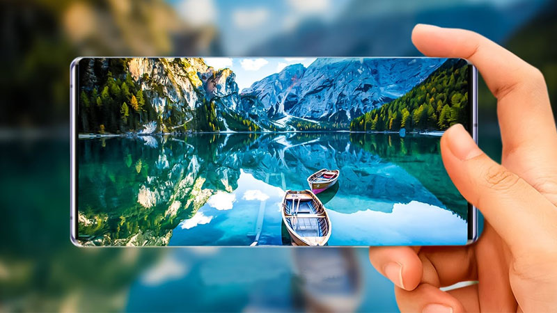

اگر به دنبال خرید گوشی موبایل ارزان هستید باید چند نکته مهم را در نظر بگیرید. اولین نکته ببرسی دوربین گوشی است تا عکس های با کیفیت بگیرید. همچنین حافظه گوشی و میزان رم تاثیر زیادی در عملکرد گوشی دارد. باتری گوشی هم برای استفاده طولانی روزانه اهمیت زیادی دارد.
ما در این صفحه بهترین گزینه های خرید گوشی را بررسی کرده ایم تا موبایلی ارزان و انتخابی مطمین و با کیفیت داشته باشید.
برندهای مختلف از سامسونگ تا شیامی گزینه های اقتصادی و کاربردی ارایه می دهند
قبل از خرید گوشی ارزان و باکیفیت، قیمت را در نظر بگیرید و امکانات را مقایسه کنید.
